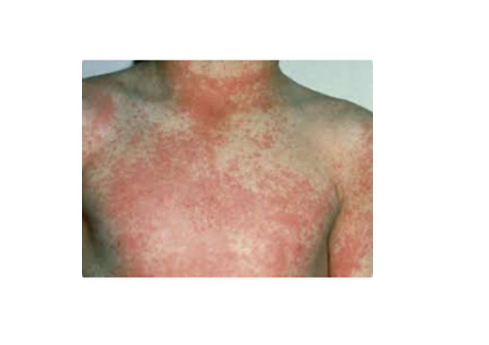
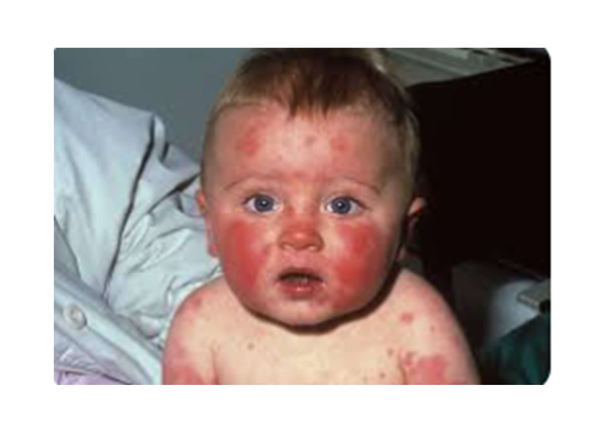
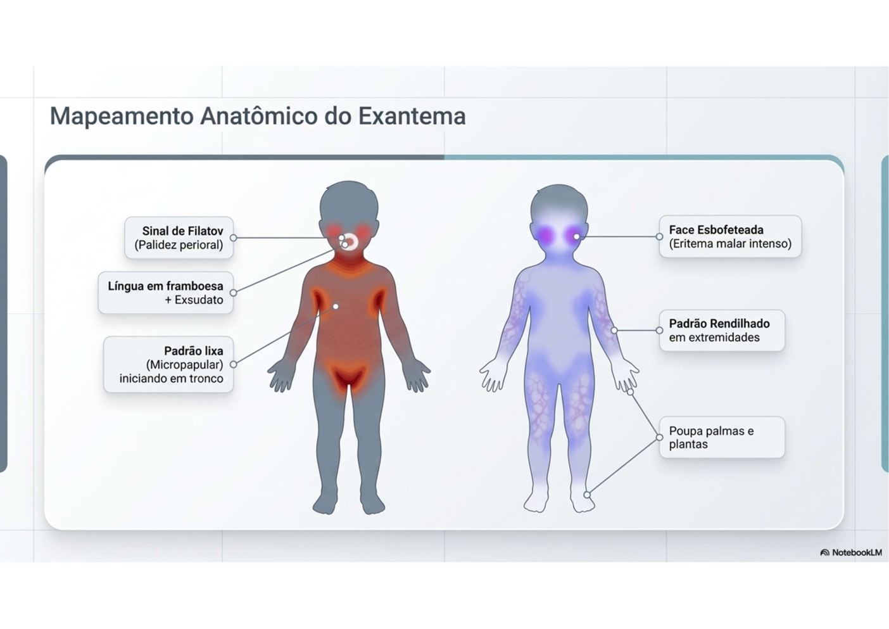
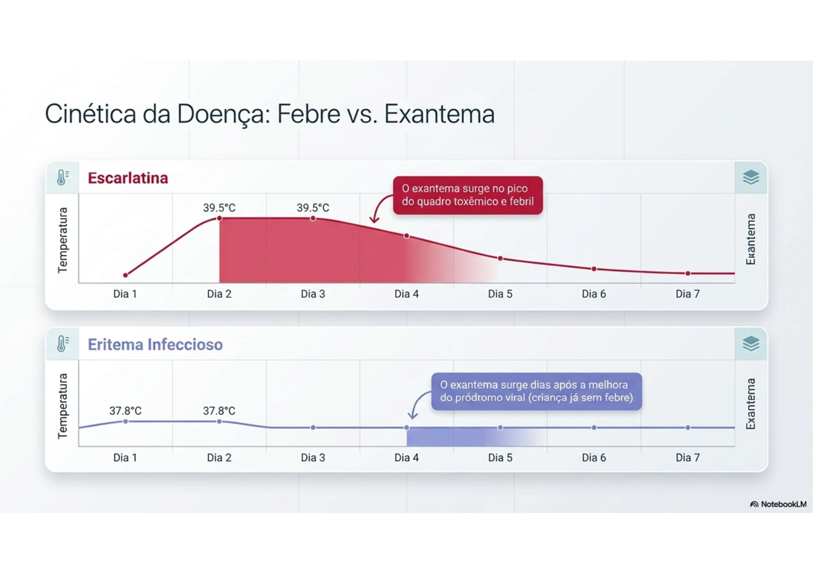
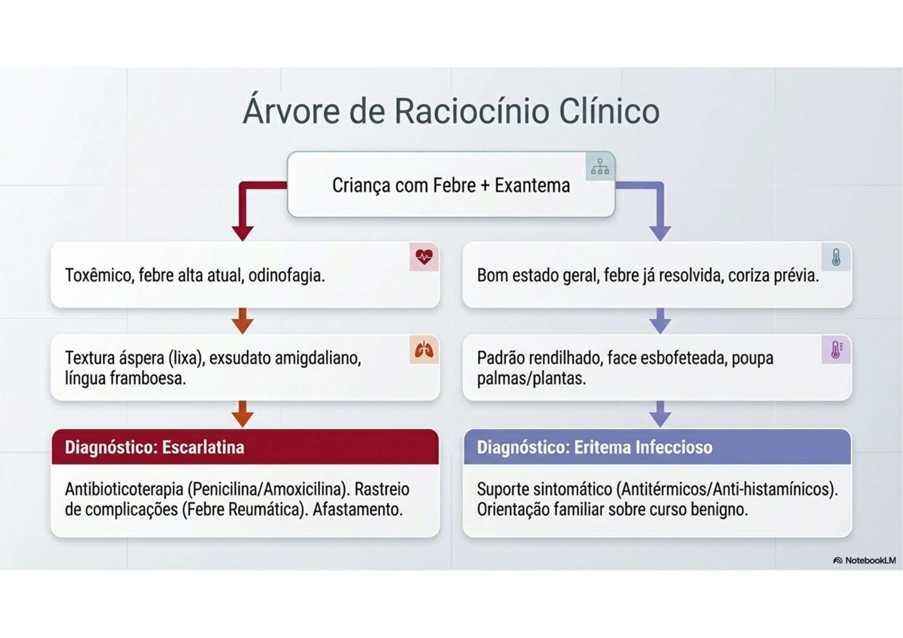
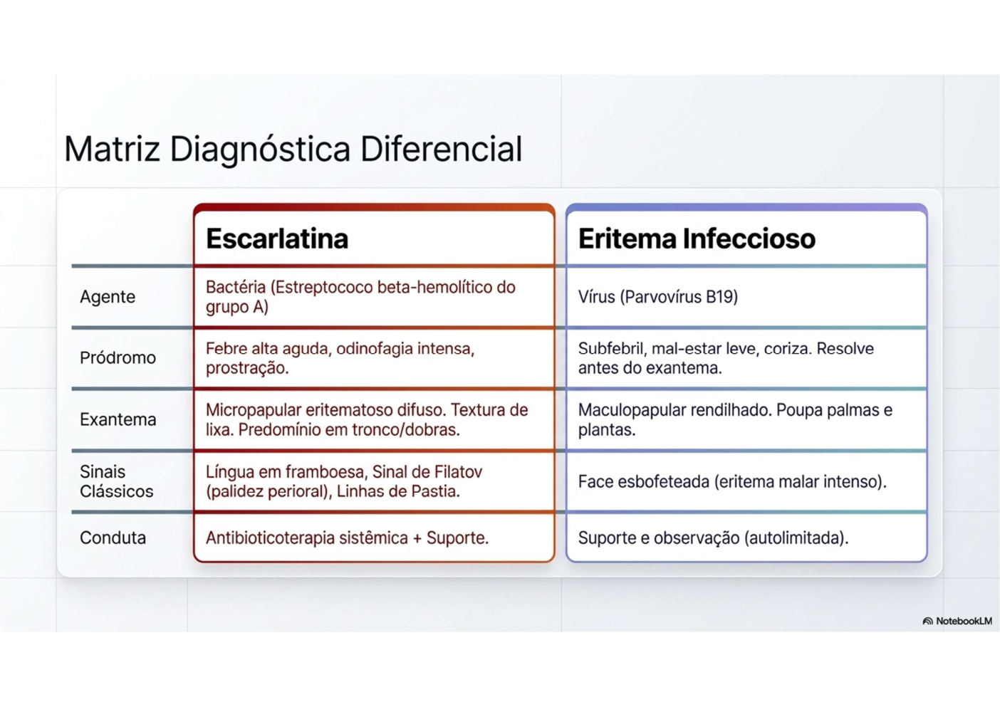

Doenças Exantemáticas em Pediatria
TABELA-MESTRE — Diagnóstico Diferencial dos Exantemas


| Doença | Agente | Faixa Etária | Período Incubação | Pródromo | Exantema | Lesão Patognomônica | Progressão | Tratamento |
|---|---|---|---|---|---|---|---|---|
| Sarampo | Vírus Sarampo (RNA) | Qualquer | 10–12 dias | 3–5 dias: febre alta, coriza, tosse, conjuntivite | Morbiliforme (maculopapular, avermelhado, 3–10 mm) | Manchas de Koplik (brancas na mucosa jugal) | Retroauricular → face → pescoço → MMSS → tronco → MMII | Sintomático + isolamento |
| Rubéola | Vírus Rubéola (RNA) | Qualquer (mais escolar) | 14–21 dias | Febre baixa, adenomegalia retroauricular, coriza leve | Rubeoliforme (róseo, maculopapular, pápulas menores que sarampo) | Adenomegalia retroauricular e occipital | Crânio → caudal, 4–5 dias; não descamativo | Sintomático |
| Exantema Súbito (Roséola) | HHV-6 e 7 | 6 meses–3 anos | 10–15 dias | Febre ALTA 3–5 dias + irritabilidade; febre cede em lise | Maculopapular róseo claro, pós-queda da febre | Aparecimento do exantema exatamente após a queda da febre | Tronco → pescoço → face → MMSS | Sintomático |
| Eritema Infeccioso (5ª doença) | Parvovírus B19 | 5–10 anos | 4–14 dias | Febre baixa, cefaleia, IVAS | Fácies esbofeteada (eritema malar bilateral) → rendilhado em extremidades | Fácies esbofeteada + rendilhado central nas lesões | 3 fases: bochechas → extremidades → recidiva com calor/sol | Sintomático |
| Escarlatina | S. pyogenes β-hemolítico grupo A | >2 anos (escolar) | 2–4 dias | Febre alta, odinofagia, cefaleia, exantema palatal | Escarlatiniforme (micropapular, áspero "lixa", vermelho vivo) | Sinal de Filatov (palidez perioral), Sinal de Pastia (linhas vermelhas nas dobras) + língua em framboesa | Pescoço → tronco → generalizado | Penicilina/amoxicilina 10 dias |
| Varicela (Catapora) | Vírus Varicela-Zóster (VZV) | Pré-escolar, escolar | 10–21 dias | Febre moderada 1–2 dias + mal-estar | Pápulo-vesicular polimorfo (lesões em diferentes estágios: mácula → pápula → vesícula → pústula → crosta) | Polimorfismo lesional; acometimento do couro cabeludo | Centrípeta (tronco > face > extremidades) | Sintomático; aciclovir para imunocomprometidos |
| Doença Mão-Pé-Boca | Coxsackie A16, Enterovírus 71 | Lactentes, pré-escolares | 3–7 dias | Febre baixa 3–5 dias, odinofagia | Pápulo-vesicular em mãos, pés, nádegas e boca (aftas) | Aftas orais + lesões nas PALMAS e PLANTAS | Mãos + pés + boca | Sintomático |
CLASSIFICAÇÃO DOS TIPOS DE EXANTEMA

| Tipo | Característica | Doenças |
|---|---|---|
| Morbiliforme | Maculopápulas 3–10 mm, avermelhadas, com pele sã entre elas, podem confluir | Sarampo, mononucleose, enteroviroses |
| Rubeoliforme | Similar ao morbiliforme, mas róseo, pápulas menores | Rubéola, enteroviroses |
| Escarlatiniforme | Eritema micropapular difuso, áspero (lixa), sem pele normal entre as lesões, poupa região perioral | Escarlatina, doença de Kawasaki (às vezes) |
| Papulovesicular | Pápulas + vesículas, perceptíveis ao tato | Varicela, HSV, doença mão-pé-boca |
| Petequial/Purpúrico | Pontos avermelhados que NÃO somem à vitropressão | Meningococcemia, dengue, PTI |
| Urticariforme | Pápulas eritematosas com contornos irregulares, evanescentes | Reações alérgicas/medicamentosas, coxsackie |
ESTAÇÃO 1 — Caso: Varicela
[CASO]: Menino, 5 anos, previamente hígido. Febre baixa há 2 dias. Lesões que começaram no tronco, se disseminaram para face e couro cabeludo. Evoluíram de máculas avermelhadas → pápulas → vesículas pruriginosas → crostas. Observa-se lesões em TODOS os estágios ao mesmo tempo.
Varicela. Diagnóstico clínico. Características: exantema pápulo-vesicular polimorfo (lesões em diferentes estágios), distribuição centrípeta (tronco > face > extremidades), acometimento do couro cabeludo e mucosa oral.
Confirmação: sorologia VZV (IgM e IgG) ou hemograma com leucopenia inicial + linfocitose posterior.
Sintomático: analgésicos/antitérmicos, loção de calamina para prurido, anti-histamínico.
Aciclovir: reservado para imunocomprometidos, >12 anos, doença crônica de pele (eczema), uso de corticoide oral prolongado.
Isolamento respiratório até todas as lesões estarem em crosta (5–7 dias após início do exantema).
Tetraviral (15 meses) + reforço aos 4 anos. Imunoglobulina específica para contatos suscetíveis imunocomprometidos.
ESTAÇÃO 2 — Caso: Exantema Súbito (Roséola)
[CASO]: Menina, 1 ano e 4 meses. Febre alta (39,5°C) há 3 dias, de difícil controle, sem outros sintomas. No quarto dia, a febre cessou abruptamente e apareceram manchas avermelhadas difusas pelo corpo.
Exantema Súbito (Roséola Infantil) por HHV-6/7. Tríade clássica: febre alta por 3–5 dias + queda brusca da febre + aparecimento simultâneo do exantema maculopapular.
Convulsão febril (complicação principal do exantema súbito, relacionada à queda brusca da febre).
Se a criança tiver 2 doses da tríplice viral: sarampo e rubéola ficam afastados.
Diagnóstico diferencial: rubéola, sarampo, reação medicamentosa.
ESTAÇÃO 3 — Caso: Escarlatina (Playbook)



[CASO]: Menina, 6 anos. Febre (38,5°C) há 2 dias + dor de garganta intensa + exantema áspero (sensação de lixa) eritematoso, generalizado, iniciado no pescoço. Língua com aspecto de morango. Região perioral pálida. Linhas vermelhas nas axilas.
Escarlatina por S. pyogenes β-hemolítico grupo A.
- Sinal de Filatov: palidez perioral em contraste com o eritema facial
- Sinal de Pastia: linhas avermelhadas nas dobras (axila, fossa antecubital, virilha)
- Língua em framboesa: entre 3º e 4º dia, papilas proeminentes vermelhas
- Descamação lamelar após resolução (1 semana)
Diagnóstico clínico + swab de orofaringe (padrão ouro) + ASLO elevado + leucocitose com desvio à esquerda.
Penicilina ou amoxicilina por 10 dias — tratamento previne febre reumática (principal complicação não supurativa).
Complicações supurativas: abscesso periamigdaliano, otite, sinusite.
Complicações não supurativas: febre reumática (2–3 semanas), GNDA (1–3 semanas).
Escarlatina × Doença de Kawasaki — Diferencial
| Característica | Escarlatina | Kawasaki |
|---|---|---|
| Língua em framboesa | Sim | Sim |
| Exantema | Micropapular áspero "lixa" | Polimorfo (morbiliforme, urticariforme) |
| Odinofagia | Sim (faringoamigdalite) | Não (fissuras labiais, não exsudato) |
| Conjuntivite | Não | Sim (bilateral, sem exsudato) |
| Edema dorsal mãos/pés | Não | Sim (eritema palmoplantar + descamação periungueal) |
| Febre | <5 dias | ≥5 dias (critério diagnóstico) |
| Adenomegalia | Cervical, bilateral | Cervical ≥1,5 cm, unilateral |
| Tratamento | ATB | AAS + imunoglobulina IV |
Pontos que o Professor Vai Checar
Alertas OSCE ⚠️
- Sarampo = Notificação compulsória imediata (assim como meningococcemia, dengue)
- Varicela com aciclovir: somente em imunocomprometidos (não é de rotina!)
- Petéquias + febre = meningococcemia até prova em contrário — NÃO confundir com exantema infeccioso
- Escarlatina sem tratamento → febre reumática (2–3 semanas) → cardite → valvopatia crônica
- Eritema infeccioso: gestantes com Parvovírus B19 → risco de hidropsia fetal não imune
Fonte
- Gerado a partir de:
conteudo_doencas_exantematicas.md(Aula 07 Teórica + Aula 08 Prática — Casos Varicela, Exantema Súbito, Impetigo Bolhoso) - Complementado com:
Playbook_Clínico_de_Exantemas.pdf(lido visualmente — Cenário 1: Escarlatina; Cenário 2: Eritema Infeccioso) - Gaps identificados: doença de Kawasaki não detalhada no material — complementada com conhecimento geral para fins de diagnóstico diferencial com escarlatina